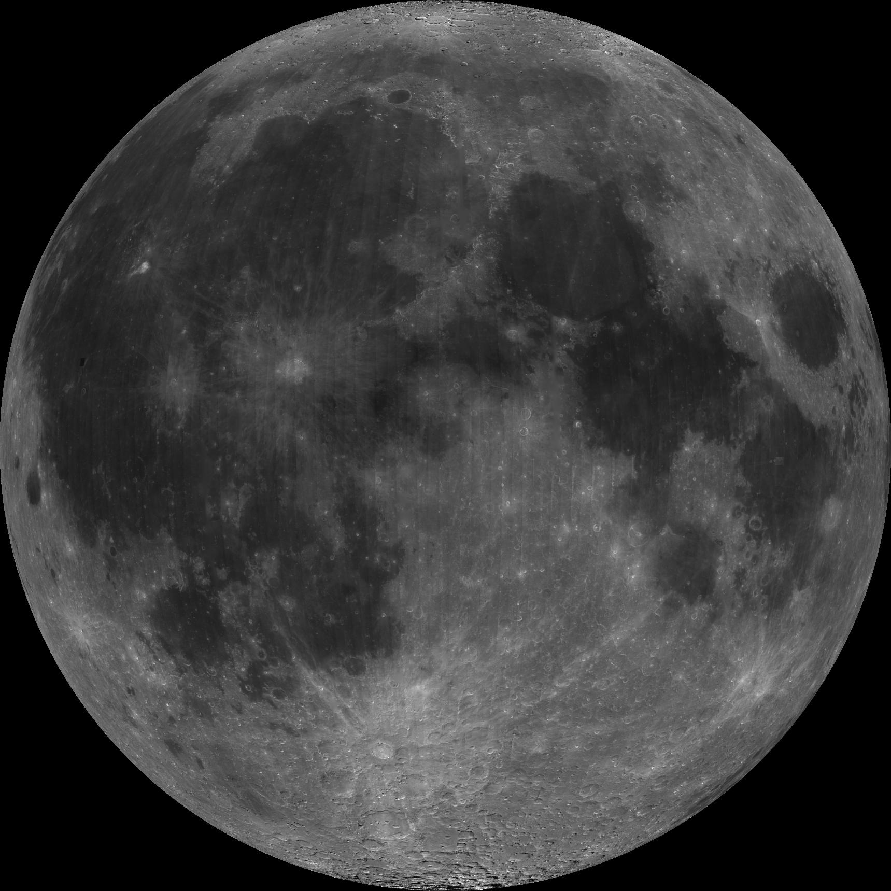

Core terms from the Emerald Tablets of Thoth the Atlantean (Doreal translation). Read through once, then test yourself. As above, so below.

Thoth, Lord of the Moon, acknowledges you.
As above, so below. — Moonology Art Gallery